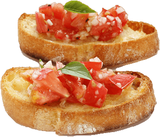

Bruschetta

Above: Two crostini (sliced and toasted Italian or French baguette)
topped with chopped tomatoes, garlic, shallot, basil, lemon,
olive oil, salt, and pepper.
The perfect summer dish to inspire your friends and your hunger!
Here is a simple recipe with many household or garden items
that is sure to have your whole family singing your praises.
"A la familia!"
Ingredients
- 12 roma (plum) tomatoes, chopped
- 1 tablespoon minced garlic
- 2 tablespoons minced shallots
- 1 cup chopped fresh basil leaves
- 1 teaspoon fresh lemon juice
- salt to taste
- freshly ground black pepper to taste
- ⅓ cup extra virgin olive oil
- 3 cloves garlic, cut into slivers
- ¼ cup extra virgin olive oil
- 1 (1 pound) loaf Italian bread, cut into 1/2 inch slices
Steps
- In a large bowl, toss together the roma tomatoes, minced
garlic, shallots, basil, lemon juice, salt, pepper and 1/3 cup olive oil.
- Place the slivered garlic and 1/4 cup olive oil in small saucepan over
medium heat. Slowly cook and stir 2 to 3 minutes. Discard garlic.
- Toast the bread slices, and brush with the olive oil heated with garlic.
Top slices with the roma tomato mixture.